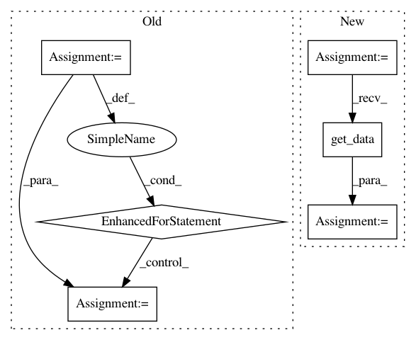

13482b28622840a153162b4c070bffdf05d51d38,plot_haxby_searchlight.py,,,#,17
Before Change
// Detrend data on each session independently
from scipy import signal
for s in np.unique(session):
X[session == s] = signal.detrend(X[session == s], axis=0)
////// Prepare the masks //////////////////////////////////////////////////////////////////////////////////////////////////////////////////
// Here we will use several masks :
// * mask is the originalmask
// * process_mask is a subset of mask, it contains voxels that should be
// processed (we only keep the slice z = 26 and the back of the brain to speed
// up computation)
process_mask = mask.copy()
process_mask[..., 38:] = False
process_mask[..., :36] = False
process_mask[:, 30:] = False
After Change
from nisl import mri_transformer
from nisl.utils import Niimg
// Detrending is disabled as we are not yet able to do it by session
mri_loader = mri_transformer.MRITransformer(mask=mask, detrend=True,
copy=False, sessions=session)
niimg = Niimg(X, affine)
X_masked = mri_loader.fit(niimg).transform(niimg)
X_detrended = mri_loader.inverse_transform(X_masked).get_data()
////// Prepare the masks //////////////////////////////////////////////////////////////////////////////////////////////////////////////////
// Here we will use several masks :
// * mask is the originalmask
In pattern: SUPERPATTERN
Frequency: 3
Non-data size: 6
Instances
Project Name: nilearn/nilearn
Commit Name: 13482b28622840a153162b4c070bffdf05d51d38
Time: 2012-08-21
Author: alexandre.abraham@cea.fr
File Name: plot_haxby_searchlight.py
Class Name:
Method Name:
Project Name: nilearn/nilearn
Commit Name: d3d91cb4d27ff6826d755f0377b54ea999105490
Time: 2012-09-18
Author: gael.varoquaux@normalesup.org
File Name: plot_ica_resting_state.py
Class Name:
Method Name:
Project Name: IndicoDataSolutions/finetune
Commit Name: dd6d8307b494b349805095653298b89100412fb9
Time: 2019-01-14
Author: benlt@hotmail.co.uk
File Name: finetune/datasets/treebank_association.py
Class Name:
Method Name: